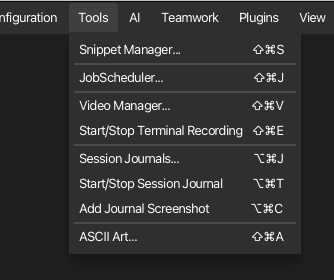

Menüreferenz¶
Every item in korTTY's menu bar, with its shortcut (where defined) and what it does. The menu bar can be hidden with Ctrl+Shift+L and shown again by right-clicking the terminal or status bar.
Datei¶
| Element | Verknüpfung | Beschreibung |
|---|---|---|
| Neuer Tab | Ctrl+T | Öffnen Sie die Schnellverbindung in einem neuen Terminal-Tab |
| Tab schließen | Ctrl+W | Schließen Sie die aktive Terminal-Registerkarte |
| Alle Tabs schließen | Alle Tabs im aktuellen Fenster schließen | |
| Neues Fenster | Ctrl+Shift+N | Öffnen Sie ein zusätzliches, unabhängiges Hauptfenster |
| Fenster schließen | Ctrl+Shift+W | Schließen Sie das aktuelle Fenster |
| Projekt öffnen… | Ctrl+O | Ein gespeichertes Projekt wiederherstellen (Fenster, Registerkarten, Layout) |
| Projekt speichern… | Ctrl+S | Speichern Sie die aktuelle Sitzung als Projekt (.kortty) |
| Backup erstellen… | Ctrl+Shift+B | Erstellen Sie ein verschlüsseltes Backup (ZIP-Passwort oder GPG) |
| Sicherung importieren… | Wiederherstellung aus einer Sicherungsdatei | |
| Aufhören | Ctrl+Q | Beenden Sie korTTY |
Verbindungseinträge (Schnellverbindung, Verbindungen verwalten/importieren/exportieren) befinden sich im Menü Connections.
Bearbeiten¶
| Element | Verknüpfung | Beschreibung |
|---|---|---|
| Schneiden | Ctrl+X | Ausschneiden (deaktiviert für Anschlusslaschen) |
| Kopie | Ctrl+C | Kopieren Sie die Terminalauswahl |
| Paste | Ctrl+V | In das Terminal einfügen |
| Finden… | Ctrl+F | Durchsuchen Sie die aktive Registerkarte (Terminal-Scrollback oder geöffneter Editor). |
Verbindungen¶
| Artikel | Beschreibung |
|---|---|
| Schnellverbindung… | Stellen Sie eine Verbindung zu einem Host her, ohne zu speichern |
| Verbindungen verwalten… | Öffnen Sie den Verbindungsmanager (Struktur, Suche, Bearbeiten) |
| Importieren… | Verbindungen von anderen Clients importieren |
| Export… | Exportverbindungen |
| SFTP-Client… | Öffnen Sie den Dual-Panel-SFTP-Dateimanager |
Sicherheit¶
| Artikel | Beschreibung |
|---|---|
| Anmeldeinformationen… | Gespeicherte Anmeldeinformationen verwalten (verschlüsselt) |
| GPG-Schlüssel… | GPG-Schlüssel verwalten, die für die Backup-Verschlüsselung verwendet werden |
| SSH-Schlüssel… | SSH-Schlüssel und Passphrasen verwalten |
Konfiguration¶
| Artikel | Beschreibung |
|---|---|
| Globale Einstellungen… | Öffnen Sie den globalen Einstellungsdialog (alle Registerkarten) |
| System-Ruhezustand verhindern | Aktivieren Sie unter macOS und Windows die aktivitätsbasierte Verhinderung des System-Ruhezustands. Der Computer bleibt nur dann wach, wenn ein Terminal angeschlossen ist, ein aktivierter Scheduler-Job in Zukunft ausgeführt wird oder ausgeführt wird oder eine KI-Anfrage ausgeführt wird. Wenn keine dieser Aktivitäten erfolgt, bleibt der Systemschlaf auch dann verfügbar, wenn das Element überprüft wird. Der Display-Ruhezustand ist davon nicht betroffen. Unter Linux ist das Element sichtbar, aber deaktiviert. |
Für jede einzelne Einstellung siehe die Settings-Referenz .
Tools¶

| Artikel | Beschreibung |
|---|---|
| Snippet Manager… | Erstellen, Bearbeiten, Organisieren, Senden und Exportieren von Befehlsausschnitten |
| JobScheduler… | Hintergrundbefehl/Snippet/AI-Agent/AI-Swarm/SFTP/Rsync-Jobs planen |
| Videomanager… | Verwalten Sie Terminalaufzeichnungen und exportieren Sie sie über WebM/MKV ffmpeg |
| Terminalaufzeichnung starten/stoppen | Aufzeichnung des aktiven Terminals umschalten (Ctrl+Shift+E) |
| Sitzungsjournale… | Manage session journals: Suchen, Öffnen, Umbenennen, Beschreiben, Exportieren und Löschen sowie Festlegen der Journaloptionen (Ctrl+Alt+J) |
| Sitzungsjournal starten/stoppen | Toggle the session journal of the active terminal tab; starting mid-session imports the existing scrollback (Ctrl+Alt+T) |
| Add Journal Screenshot | Snapshot the active terminal into its running session journal (Ctrl+Alt+C) |
| ASCII Art… | Two tabs in one dialog: Text Banner renders text as a FIGlet banner in multiple font styles, AI Picture lets an AI profile draw a subject as ASCII art |
The three session-journal items stay visible but are disabled when an enterprise policy denies the session-journal feature.
AI¶

| Artikel | Beschreibung |
|---|---|
| KI-Manager… | Manage AI profiles, integrated GGUF models, RAG knowledge stores, the AI Skills library, and Text/Coding roles |
| Saved Chats… | Open the saved AI chat conversations directly in their own window; invoking it again brings the existing window to the front |
| AI Agent… | Öffnen Sie den Terminal AI Agent |
| KI-Planung… | Öffnen Sie den KI-Planungsworkflow |
| KI-Schwarm… | Senden Sie eine KI-Aufgabe an viele Server und vergleichen Sie die Antworten (Ctrl+Alt+S) |
KI-Manager wird als modales Fenster geöffnet, sodass es sichtbar bleiben kann, während Sie das Hauptfenster verwenden. Durch einen erneuten Aufruf wird derselbe Manager für dieses Hauptfenster wiederhergestellt und fokussiert, anstatt ein Duplikat zu erstellen. Seine fünf Abschnitte sind Profile (Verbindungsmodus, Modell, Eingabeaufforderungsvoreinstellung, Reasoning, Internetzugang und Token-Budget), Lokale Modelle (Suchen/Herunterladen/Importieren von GGUF-Modellen), Wissensspeicher (RAG-Quellen), KI-Skills (die Fertigkeitsbibliothek, aus dem globalen Einstellungsdialog hierher verschoben) und Lokale KI (Text-/Codierungs-/Einbettungsrollen und die lokale Laufzeit). Der geöffnete primäre Abschnitt bleibt durch eine fette Akzentunterstreichung gekennzeichnet, nachdem Sie den Fokus auf seine Tabellen, Felder oder Schaltflächen verschoben haben:

Plugins¶
| Artikel | Beschreibung |
|---|---|
| Terminal-Effekte… | Terminal-Effekt-Plugins aktivieren/deaktivieren, konfigurieren, importieren/exportieren |
Ansicht¶
| Element | Verknüpfung | Beschreibung |
|---|---|---|
| Dashboard anzeigen | Ctrl+Shift+D | Schalten Sie das Verbindungs-Dashboard um |
| Show Command Timestamps | Ctrl+Shift+T | Schalten Sie die Inline-Befehlszeitstempel um |
| Menüleiste anzeigen | Ctrl+Shift+L | Schalten Sie die Menüleiste um |
| File Browser ▸ Show on Left | Ctrl+Shift+K | Docken Sie das Lokal an Dateibrowser links vom Terminal; Wenn Sie die aktive Seite deaktivieren, wird sie ausgeblendet |
| Dateibrowser ▸ Rechts anzeigen | Ctrl+Shift+R | Docken Sie das Lokal an Dateibrowser rechts vom Terminal; Wenn Sie die aktive Seite deaktivieren, wird sie ausgeblendet |
| Vergrößern | Alt++ | Erhöhen Sie die Schriftgröße des Terminals |
| Herauszoomen | Alt+- | Verringern Sie die Schriftgröße des Terminals |
| Zoom zurücksetzen | Alt+0 | Setzen Sie die Schriftgröße des Terminals zurück |
| Hintergrundtransparenz | Schieberegler (0–100 %), der den Terminalhintergrund auf dem Desktop durchscheinen lässt, während der Text scharf bleibt; Jeder geteilte Bereich erbt den Wert. Der Wert bleibt über Neustarts hinweg gespeichert; Der Vollbildmodus macht den Hintergrund des Terminals vorübergehend undurchsichtig und stellt den Wert wieder her, wenn Sie ihn verlassen. Das Ein- und Ausschalten erfordert einen Neustart. Die Statusleiste zeigt daher einen Hinweis an, wenn Sie diesen Schwellenwert überschreiten. Wird nur in der Menüleiste im Fenster angezeigt. | |
| Vollbild | F12 | Fenster-Vollbild umschalten |
| Nur Terminal-Vollbild | Ctrl+Shift+F | Zeigt das gesamte korTTY-Fenster an – einschließlich Menüs, Registerkarten und Statusleiste – in der vorherigen Fenstergröße und zentriert auf einem leeren Vollbildhintergrund, wodurch der Desktop und andere Fenster ausgeblendet werden |
| Terminal-Bildlaufleisten im Vollbildmodus ausblenden | Bildlaufleisten auch im Vollbildmodus ausblenden | |
| AI-Agent-Panel ▸ Unten / Links andocken / Rechts andocken | Wählen Sie, wo sich das AI-Agent-Aktivitätspanel befindet | |
| Live Journal ▸ Links andocken / Rechts andocken | Docken Sie an Live-Journal-Panel neben dem Terminal; Wenn Sie die aktive Seite auswählen, wird sie ausgeblendet | |
| Live Journal ▸ Show/Hide | Ctrl+Alt+L | Toggle the live journal panel on its last-used side (right by default) |
Teamarbeit¶
| Artikel | Beschreibung |
|---|---|
| Teamwork-Einstellungen… | Gemeinsam genutzte Verbindungsquellen und Synchronisierung konfigurieren |
Hilfe¶
| Element | Verknüpfung | Beschreibung |
|---|---|---|
| Manual | F1 | Open this documentation inside korTTY |
| Über korTTY | Versions- und Projektinformationen |
The manual has its own text-size buttons at the top left of its window: A-, der aktuelle Prozentsatz und A+. Durch Klicken auf den Prozentsatz wird dieser zurückgesetzt. Für die gleichen drei Aktionen gibt es Tastaturkürzel: Cmd++, Cmd+-, Cmd+0. korTTY remembers the size, and the size covers the whole window — the page and, when it is open, the AI search panel beside it. See Textgröße der Anleitung.
Screenshots und Diagramme werden durch Klicken vergrößert: Das Bild wird über der Seite in der größtmöglichen Größe geöffnet, die das Fenster zulässt, mit den Schaltflächen − / + und einem Prozentsatz, der es auf die angepasste Größe zurücksetzt. Zoomen Sie weiter, um eine einzelne Einstellungszeile zu lesen, ziehen Sie das Bild zum Schwenken und schließen Sie es mit ×, Esc oder einem Klick neben dem Bild. Ctrl und der Radzoom ebenfalls. Dasselbe funktioniert auch im Online-Ratgeber.
macOS Dock & Menüleiste¶
Unter macOS läuft die gepackte App weiterhin im Hintergrund (damit der JobScheduler geplante Jobs ausführen kann), auch nachdem das letzte Fenster geschlossen wurde. korTTY fügt daher zwei zusätzliche Einstiegspunkte hinzu, damit es erreichbar – und beendet – bleibt, auch wenn kein Fenster geöffnet ist:
- Dock-Symbolmenü – Klicken Sie mit der rechten Maustaste auf das Dock-Symbol von korTTY, um schnelle Aktionen durchzuführen: Neues Fenster, Neuer Tab, Verbindungen verwalten…, Projekt öffnen…, Anleitung, Über korTTY und Beenden.
- Menüleisten-(Status-)Symbol – ein Taskleistensymbol mit Neues Fenster und Beenden; Durch Klicken auf das Symbol wird ein neues Fenster geöffnet.
Beide bieten ein zuverlässiges Beenden, selbst wenn jedes Fenster geschlossen ist.